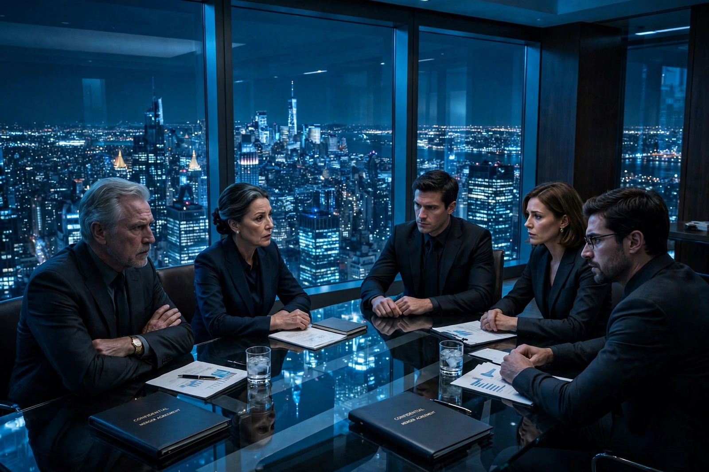

| Succession | |
|---|---|
 | |
| Genre | Comedy-drama, satire, black comedy, tragedy |
| Created by | Jesse Armstrong |
| Starring | Brian Cox, Jeremy Strong, Sarah Snook, Kieran Culkin, Matthew Macfadyen, Nicholas Braun, Alan Ruck |
| Composer | Nicholas Britell |
| Country of origin | United States |
| No. of seasons | 4 |
| No. of episodes | 39 |
| Original network | HBO |
| Original release | June 3, 2018 – May 28, 2023 |
Succession is an American comedy-drama television series created by Jesse Armstrong that aired for four seasons on HBO from June 3, 2018, to May 28, 2023. The series centers on the Roy family, the owners of Waystar RoyCo, a global media and entertainment conglomerate, who are fighting for control of the company amid uncertainty about the health of the family's patriarch, Logan Roy.
Logan Roy (Brian Cox), the ageing and irascible founder of Waystar RoyCo, has no clear successor. His four adult children — Connor (Alan Ruck), Kendall (Jeremy Strong), Shiv (Sarah Snook), and Roman (Kieran Culkin) — maneuver for position, forming and betraying alliances with one another and with outsiders including Shiv's husband Tom Wambsgans (Matthew Macfadyen) and the family's bumbling cousin Greg Hirsch (Nicholas Braun). The family's business empire spans news media, theme parks, cruise lines, and film studios, and the series satirizes the politics, wealth, and dysfunction of the global elite.
Armstrong, a British writer known for Peep Show and The Thick of It, originally developed the story as a screenplay about the Murdoch family before recasting it as a fictional dynasty. The pilot was directed by Adam McKay, who remained an executive producer. The series was filmed largely in New York, with location shooting in Italy, Croatia, Norway, and elsewhere. Nicholas Britell's score, built around a brooding piano theme, became widely acclaimed in its own right.
Succession received widespread critical acclaim for its writing, acting, direction, and score. It won the Primetime Emmy Award for Outstanding Drama Series for its second, third, and fourth seasons, along with numerous acting and writing awards for Cox, Strong, Culkin, Snook, Macfadyen, and Armstrong. Critics frequently praised its blend of Shakespearean tragedy and cringe comedy, and its dialogue entered popular usage.